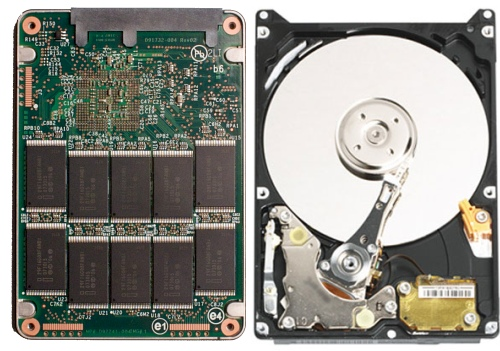

HARDWARE
O QUE É?
Hardware são as partes que podemos ver e tocar do computador, ou seja, todos os componentes da sua estrutura física. São, essencialmente: placa mãe, processador, placa de vídeo, HD (disco rígido) ou SSD, memória RAM, memória ROM, cooler, fonte de alimentação e gabinete (para PCs — computadores pessoais).
PERIFÉRICOS
Dispositivos como pen-drives, fones de ouvido e outros se chamam periféricos. Os periféricos são definidos como aparelhos que enviam e recebem informações de um computador. Esses, sejam para receber ou enviar informações, estão todos ligados ao CPU (Unidade Central de Processamento, ou apenas processador) do computador. Portanto, tudo aquilo que se liga a um computador é um periférico. Existem alguns tipos de periféricos, são:
De Entrada
Envia informação para o computador.
Exemplos: teclado, mouse, joystick (controle para consoles), digitalizadora.
De Saída
Transmitem informação do computador para o utilizador (usuário).
Exemplos: monitor, impressora, caixa de som.
De Entrada ou Saída (ou Mistos)
Enviam/recebem informação para/do computador.
Exemplos: monitor touchscreen, drive de DVD, modem, headset (fone e microfone).
De Armazenamento
Armazenam informações do computador e para o mesmo.
Exemplos: pen-drive, cartão de memória.
PEÇAS
PLACA MÃE
É na placa mãe que são conectados todos os componentes do PC, e pode ser comparada como o "coração" do PC. Ela é responsável por interligar o processador com a memória RAM, com o HD, a placa de vídeo, etc. Existem vários tipos de placa mãe. Algumas suportam determinadas peças, outras não. Cada uma tem suas características, como o tipo de soquete (lugar onde se encaixa o processador), o chipset (responsável pela troca de informações dos componentes), as formas de conexões, entre outras.
PROCESSADOR
O microprocessador, ou simplesmente processador, e ainda CPU (Unidade Central de Processamento) é quem faz o trabalho pesado das coisas. Ele opera com números e símbolos representados no sistema binário. Tudo o que o computador
vai fazer passa pelo processador. Ele é o "cérebro" da máquina.
A frequência de processamento (velocidade, clock), medido em hertz (geralmente Gigahertz), define a capacidade do processador em processar informações ao mesmo tempo. O core é o núcleo do processador.
Existem processadores core e multicore, ou seja, processadores com um núcleo e com vários núcleos na mesma peça. Logo, um processador dual core, por exemplo, possui dois núcleos. A memória Cache é um tipo de memória auxiliar,
que serve para aumentar a velocidade no acesso aos dados e instruções armazenados na memória RAM. A potência, medida em Watts, é a quantia de energia que é consumida por segundo: 1W = 1 J/s (Joule por segundo).
PLACA DE VÍDEO

A placa de vídeo é responsável por enviar sinais do computador para o monitor, melhorando as imagens. É categorizada em duas: on-board e off-board.
A placa on-board é integrada fixamente na placa mãe, impossibilitando uma futura (e desejável) troca — a não ser que a placa mãe seja substituída. Não tem uma memória dedicada, e por isso acaba utilizando a memória RAM. Este método deixa o seu sistema mais lento. A capacidade dessa placa é limitada.
Já as placas off-board possuem memória própria, com sua capacidade sempre medida em bytes. Geram imagens e efeitos visuais tridimensionais, e aceleram os bidimensionais, aliviando o trabalho do processador principal e gerando um resultado final melhor e mais rápido. Em games, por exemplo, quanto melhor a placa, mais definições de efeitos serão vistos, e mais rápido o jogo irá rodar. A maioria dos jogos modernos exige placas super potentes.
HD e SSD

No disco rígido (HD), ou winchester (termo que caiu em desuso há muito tempo), estão armazenadas todas as informações e programas de um computador. Ele é, normalmente, o principal meio de armazenamento de um PC. Arquivos de qualquer formato que forem salvos serão guardados nele. A denominação HD (hard disk) se dá porque ele tem o formato de um CD onde são gravadas informações a laser. Ele tem uma memória não-volátil, ou seja, os arquivos não são perdidos quando o computador é desligado, sendo considerado o principal meio de armazenamento de dados em massa.
Já o SSD (Solid Slate Drive, ou Drive em Estado Sólido) é bem mais caro e possui uma capacidade de armazenamento bem inferior a de um HD — por ser uma tecnologia relativamente nova, seus modelos são limitados a até 256GB, geralmente, enquanto HDs de 1, ou até mesmo 2TB (terabytes) são muito comuns. Entretanto, o SSD tem suas vantagens.
Em um disco rígido convencional, a velocidade de transferência é a soma do tempo em que a cabeça de leitura (agulha de leitura) demora pra alcançar a parte do disco onde o arquivo está armazenado mais o tempo que esse arquivo demora para ser copiado para a memória. O SSD, por ser um tipo de memória flash (a mesma usada em pendrives), tem acesso quase instantâneo
a qualquer parte do chip, não importando muito se o arquivo está fragmentado ou não. E, também, por não possuir agulha de leitura, não há ruídos com o uso de um SSD. Ainda, para quem usa laptop, há algumas vantagens adicionais, como o seu menor consumo de energia, que aumenta a autonomia da bateria, e a sua resistência a vibrações e chacoalhos pela ausência de partes móveis (devido ao sistema totalmente eletrônico do SSD).
MEMÓRIA RAM

A memória RAM (Random Access Memory, ou Memória de Acesso Aleatório) é uma memória primária (que o processador acessa diretamente) volátil, ou seja, os arquivos são apagados após deixar de ser energizada, na reinicialização do micro. É onde o processador busca dados e programas para executar. Existem dois tipos de memória RAM:
DRAM (Dynamic Random Access Memory)
É o tipo dinâmico. O acesso às informações costuma ser mais lento que nas memórias estáticas. Em compensação tem preços bem menores que as memórias do tipo estático, pois utiliza uma tecnologia mais simples.
SRAM (Static Random Access Memory)
É o tipo estático. São muito mais rápidas que as memórias DRAM, porém armazenam menor quantidade de dados.
As memória RAM possuem, também, diferentes tipos de tecnologia: DDR, DDR2, DDR3 e, recentemente, DDR4. Uma RAM DDR-400, funciona internamente a 200 MHz (MegaHertz), mas oferece 400 MHz por trabalhar com duas operações por ciclo (2 x 200). Um pente DDR2-800, por sua vez, pode oferecer 800 MHz, já que faz uso de quatro operações por vez (4 x 200). O DDR3-1600, então, por utilizar 8 operações por ciclo de clock, pode oferecer 1.600 MHz (8 x 200). O padrão DDR4, apesar de oferecer também 1.600 MHz, é consideravelmente melhor, possuindo mais pinos para a realizar a alimentação das micropeças e a comunicação, além do alterado posicionamento de chips e tensão de alimentação. A estrutura de encaixe dos pentes é diferente de acordo com sua tecnologia, e por isso, antes de trocar uma RAM, é preciso ver a compatibilidade da placa mãe com certo tipo de módulo.
MEMÓRIA ROM
A sigla ROM vem da expressão em inglês Read Only Memory (Memória Apenas de Leitura). Não permite a alteração ou remoção dos dados nela gravados, os quais são impressos em uma única ocasião, e não é volátil. Há três tipos de memória ROM:
PROM (Programable Read Only Memory)
É a "memória programável apenas de leitura", uma das primeiras ROM da história, e aceita apenas uma única gravação. É um circuito eletrônico que armazena dados por meio de um conjunto de fusíveis, e para queimar uma PROM, utiliza-se um dispositivo chamado programador.
EPROM (Erasable Programmable Read Only Memory)
"Erasable" vem do inglês "apagável", o que indica que a memória pode ser apagada e regravada. O processo de gravação e leitura é feito através de uma carga elétrica. Para limpar a memória, aplica-se um feixe de raio ultravioleta sobre a área onde o chip fica aparente, protegido por uma lente de cristal. Eram utilizados para armazenar o programa BIOS.
EEPROM (Eletrical Erasabel Programmable Read Only Memory)
É a "memória somente de leitura, programável e apagável eletricamente". Pode-se apagar parte da memória e gravar novamente sem problemas. Para gravar, aplica-se uma carga elétrica no circuito da célula de memória ou em um grupo de células de memória, em vez de luz ultravioleta. Não necessita de um aparelho programador.
Além disso, há os encapsulamentos das memórias:
DIP (Dual In-line Package)
Um dos primeiros tipos de encapsulamento usados em memórias, sendo especialmente popular nas épocas dos computadores XT e 286. Como possui terminais de contacto – “perninhas” – de grande espessura, seu encaixe ou mesmo sua colagem através de solda em placas pode ser feita facilmente de forma manual. Este encapsulamento também é muito comum em chips de memória ROM usados nas placas mãe, porém atualmente caindo em desuso.
SOJ (Small Outline J–Lead)
Esse encapsulamento recebe este nome porque seus terminais de contato lembram a letra ‘J’. Foi bastante utilizado em módulos SIMM (Single In-line Memory Module, é um tipo de módulo de memória contendo RAM usada em computadores do início da década de 1980 até fins da década de 1990) e a sua forma de fixação em placas é feita através de solda, não requerendo furos na superfície do dispositivo.
TSOP (Thin Small Outline Package)
Tipo de encapsulamento cuja espessura é bastante reduzida em relação aos padrões citados anteriormente (cerca de 1/3 menor que o SOJ). Por conta disso, seus terminais de contacto são menores, além de mais finos, diminuindo a incidência de interferência na comunicação. Foi usado pela primeira vez em cartões de memória para notebooks. É um tipo aplicado em módulos de memória SDRAM e DDR. Há uma variação desse encapsulamento chamado STSOP (Shrink Thin Small Outline Package) que é ainda mais fino.
CSP (Chip Scale Package)
Mais recente, o encapsulamento CSP destaca-se por ser “fino” e por não utilizar pinos de contacto que lembram as tradicionais “perninhas”. Em vez disso, utiliza um tipo de encaixe chamado BGA (Ball Grid Array). Esse tipo é utilizado em módulos como DDR2 e DDR3.
COOLER
O processador realiza milhões de cálculos por segundo. A atividade interna nele só é possível graças à energia elétrica que transita de um lado para o outro. Acontece que essa grande
carga de trabalho gera calor, visto que os materiais oferecem resistência à passagem de corrente. Consequentemente, os processadores aquecem muito quando estão efetuando tarefas.
Para evitar a queima ou possíveis danos ao componente, é preciso resfriá-lo. Esta é a função do cooler (significa “refrigerador”).
Uma solução de arrefecimento
é necessária para manter a temperatura do processador em um nível aceitável, garantindo o bom desempenho durante o processamento de dados. Quase todos os
computadores contam com pelo menos dois coolers: um deles serve para resfriar o processador e outro para remover o calor da fonte de alimentação. Algumas máquinas, ainda, contam
com diversos refrigeradores. Eles são utilizados para resfriar placas de vídeo, discos rígidos e outros componentes.
FONTE DE ALIMENTAÇÃO

A fonte de energia do computador ou, em inglês, PSU (Power Supply Unit — Unidade de Alimentação de Energia), é responsável por converter a voltagem da energia elétrica, que chega pelas tomadas, em voltagens menores, capazes de ser suportadas pelos componentes do computador. Essa peça gera valores que variam entre 12, 5 e 3,3 volts. Existem dois tipos de fontes, porém atualmente apenas uma delas (a ATX) é usada:
Fonte AT
Nas fontes AT, que são as antigas, o conector que era plugado à placa-mãe era dividido em dois, chamados de P8 e P9. Este tipo de fonte exigia um certo cuidado do técnico que fosse montar um micro, pois tanto os fios pretos do conector P8 quanto do conector P9 deveria ficar no centro, caso contrário, seria ocasionada a queima da placa mãe ou da fonte. Outro ponto desfavorável é que com essas fontes a máquina não desligava sozinha, e o usuário tinha que segurar o botão on/off para o desligamento.
Fonte ATX
Padrão mais recente. Usa conector de 20 ou 24 pinos. Tem novas funções, entre elas o mais importante: Soft On/Off - usado para ligar/desligar a fonte por software. É graças a esse recurso que o sistema operacional consegue encerrar as atividades do computador sem que o usuário tenha que apertar o botão do gabinete. Além disso, não há uma preocupação na hora de plugar o conector à placa, pois o conector é único e o mesmo possui chanfros que impedem o técnico de plugar este conector de forma invertida ou de lado errado na placa mãe, evitando muitos problemas indesejáveis.
GABINETE
O gabinete é a “casa” de todas as peças descritas anteriormente. Também chamado de torre, ele possui diversos modelos, que dependem da necessidade de cada um. Alguns
possuem melhor ventilação, fornecem mais espaço, têm um design mais moderno, etc. É uma caixa metálica (ou com elementos de plástico) e possui locais de encaixe para as placas
e uma unidade de fonte elétrica (fonte de alimentação).
Dentro do gabinete são instaladas as placas, que são grupos de circuitos eletrônicos que servem para comandar o microcomputador e seus periféricos.
As principais placas já vêm instaladas quando se compra o microcomputador, mas outras podem ser instaladas, para melhorar o desempenho, tais como placa aceleradora de vídeo ou placa de som.


© Void Co. 2018, Sobre VOID | Contato